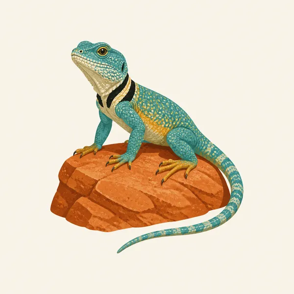
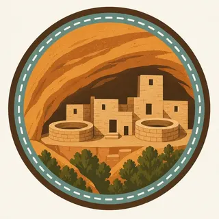

01
Pithouses on the mesa
The earliest known homes are single-family pithouses from about 550 CE, half above ground and half below, mostly on the mesa. Some pithouses were also built in the cliffs long before the famous masonry villages.
TrailMark Archive Edition
Colorado | Mesa Verde
The first national park set aside for cultural heritage, with cliff dwellings built mostly between 1180 and 1280.
Archive No. TM-MEVE-023
National Park since 1906
Collection Cliff dwellings
Park Overview
On June 29, 1906, President Theodore Roosevelt established Mesa Verde National Park to preserve cultural heritage, the first national park of its kind.
The places page describes more than 81 square miles of mesas, canyons, hills, and valleys, and more than 52,000 acres holding the most extensive concentration of well-preserved prehistoric cliff dwellings in the United States. It counts more than 5,000 archeological sites, including 600 alcove dwellings. The history index, updated at the end of 2025, says the park preserves nearly 5,000 ancestral sites. Both pages are describing one dense landscape.
Ancestral Pueblo people inhabited this land from about 550 to 1300 CE. Most cliffside villages were built between 1180 and 1280. Cliff Palace is the largest cliff dwelling in the park.
Emotional Thesis
Photographs train the eye on the alcove. NPS says the vast majority of Ancestral homes are on the mesa top, where people lived longer, farmed flat fields, and built reservoirs for rain and snowmelt.
TrailMark puts the cliff dwelling in the header because that is the image people know, and then insists on the mesa. A park of only the last century of building would be a smaller story than the one the places page tells.
Landscape Highlights
01
The earliest known homes are single-family pithouses from about 550 CE, half above ground and half below, mostly on the mesa. Some pithouses were also built in the cliffs long before the famous masonry villages.
02
Far View, in the middle of Chapin Mesa, was among the longest-occupied and most densely populated areas, with farmland, sunlight, and soil around it. Sun Temple is a large D-shaped roomblock that may never have been finished before people began to leave.
03
Most cliffside villages date from 1180 to 1280 CE. The alcoves were carved by natural springs, which mattered in dry years and which have sheltered the stone for centuries. Cliff Palace is the largest of them.
Wildlife
The extra illustration is a collared lizard on sandstone. The pages opened for this essay are about people and buildings, not a wildlife census, so the lizard stays an illustration.

01
Do not turn the drawing into a species total. That number was not on the history or places pages.
02
The living park is still a mesa of piñon and juniper around the stone. Walking off a site to chase an animal is how a wall gets climbed.
03
Archeological sites are the wildlife of this essay in one sense only: they are the thing the park was created to keep.
Geology
The canyon alcoves were carved by natural springs. People built in a shape the rock had already made.
01
That is the geologic sentence the places page actually gives. A longer sandstone story belongs on a geology page this essay did not use for numbers.
02
Alcoves are why the masonry survived. Preservation is partly a gift of the overhang.
03
The mesa top is the other geology: flat land, soil, and rain that could be caught in reservoirs.
Some cliff roads and tours close. The Park Service calendar is the schedule. A closed alcove is not a suggestion to find your own way in.
Mesa-top sites are easier to understand when you are willing to look at pithouses and reservoirs, not only at Cliff Palace.
The overhangs make shade and the mesa does not. Heat and tickets are both NPS questions for the day you go.
Side light on masonry is the photograph. It is also when a stabilizing project, like the one described for Cliff Palace, may be the quieter story.
Photography
The header works because the dwelling sits in shade under a sandstone curve, with the canyon opening to the left.
01
A wall with no roof of stone misses the reason these buildings lasted.
02
A second frame of a mesa-top village keeps the essay honest. Most homes were up there.
03
Cliff Palace has needed conservation because it is nearly eight centuries old. Hands, chalk, and climbing are damage.
Field Notes
The cliff dwelling is the last chapter of a mesa that had already been lived on for centuries.
TrailMark Field Notes

Badge Story
The mark fails if the buildings could be a mission or a fort. They need the curve of the alcove and the sandstone color of this mesa.
Warm stone, a dark overhang, and small rectangular rooms.
Cliff Palace can be suggested. It should not be drawn as a single tower.
The collared lizard is the extra plate, not the badge's main subject.
Archive No.023
LocationMesa Verde
ReleaseAlcove Mark
Stewardship / Safety
The cultural-resource staff stabilize places such as Cliff Palace so the stone survives visitors. The rule is older than the tour: leave the site as you found the mortar.
Stay on the walk the park built. A shortcut into an alcove is how a preserved wall becomes rubble.
Do not collect pottery, stone, or plants. The places page is explicit that people left traces over the whole mesa.
Tour times and closures are on the NPS site. An alcove that is closed is closed.
Yucca House is a different unit. Do not treat an unexcavated valley pueblo as a place to dig because it looks buried.
Current conditions, fees, and alerts are on the National Park Service site.
Continue the Archive
Black Canyon of the Gunnison, published with this batch, is a gorge cut in old rock. Grand Canyon is the river canyon. Neither is an Ancestral Pueblo city.